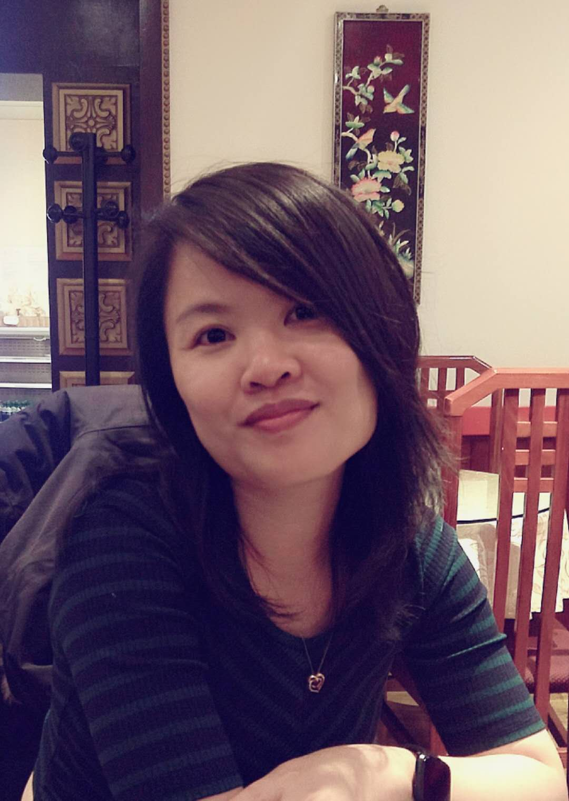

Hello, my name is Xuan. I am a Software Engineer living in London, UK.

About:
I am a philosopher turned software engineer, currently looking for full-time web development opportunities in London. I’m passionate about using technology to improve people’s lives and keen to understand how technology transforms different industries. I constantly strive to better my technical and soft skills. My training in philosophy, logic and linguistics honed my ability to break down and solve complex problems and to learn new programming languages quickly. With a forward-thinking mindset, I value good error messages, documentation and accessibility. I am open-minded, compassionate and thrive in team settings where I build trusting professional relationships with people from different backgrounds.